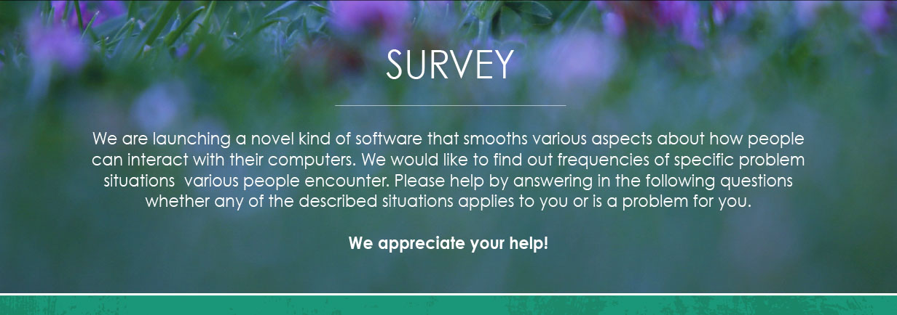

CALCULATOR
CONTACT
FAQ
DOWNLOADS
SURVEY
VIDEO
Savings Calculator
Number of Employees
Average Monthly Salary
Average Hourly Salary
Est. time saved (sec in min)
Length of savings period
Currency
EUR
USD
GBP
PLN
SEK
NOK
DKK
Calculate
Savings:

1. You do not upgrade your computer hardware every year. Maybe once per 5 years. Or even less often.
Yes
No
2. You have many programs open
Yes
No
3. The computer's fan makes too much noise or turns on too often
Yes
No
4. The laptop runs uncomfortably hot
Yes
No
I don't use a laptop
5. The laptop battery drains too fast
Yes
No
I don't use a laptop
6. You type something and the letters come to screen seconds later
Yes
No
7. The program you are working on responds to mouse clicks too slowly
Yes
No
8. The mouse moves jerkily or lags behind
Yes
No
9. You have to wait for the program to wake when you switch between running programs
Yes
No
10. You perform some harddisk-intensive operation (for example, you do a file search or you process a big file) and other programs lag
Yes
No
11. Which Windows operating system do you use? (optional):
2000
XP
Server 2003
Vista
Server 2008
Windows 7
Server 2008 R2
Windows 8
Server 2012
12. Do you want to mention any programs that you suspect or know to be troublemakers in your computer? (optional):
13. Your city and university (optional):
14. Do you have any questions to us? Then write them here.
15. Your e-mail (insert if you want feedback or further information about product launch):
© 2014 Green Wave. The computer humanised. Be power smart. Ride on.
Green Wave is a project by
Simplify
. Inspired by stars, Android operating system, WinRT and Mac OSX Mavericks. No Windows developers were harmed during its implementation.